School life
Good results matter, but so does a happy childhood. Here's a look at life outside the exam hall.
Space to run around
Bensal has its own playground and football pitch. Break time is for playing, and football is a favourite with a lot of our pupils.
Outside lessons, the whole school often comes together in the compound, as you can see in the video.
Our younger children have room to play safely too, which is an important part of the day in day care and pre-primary.
Learning trips
Some things are easier to understand when you see them for yourself. Our pupils go on educational visits to places around Morogoro.
On one recent trip, pupils visited a local radio station. They toured the newsroom, met the people who work in each department, and saw how programmes are put together and broadcast.
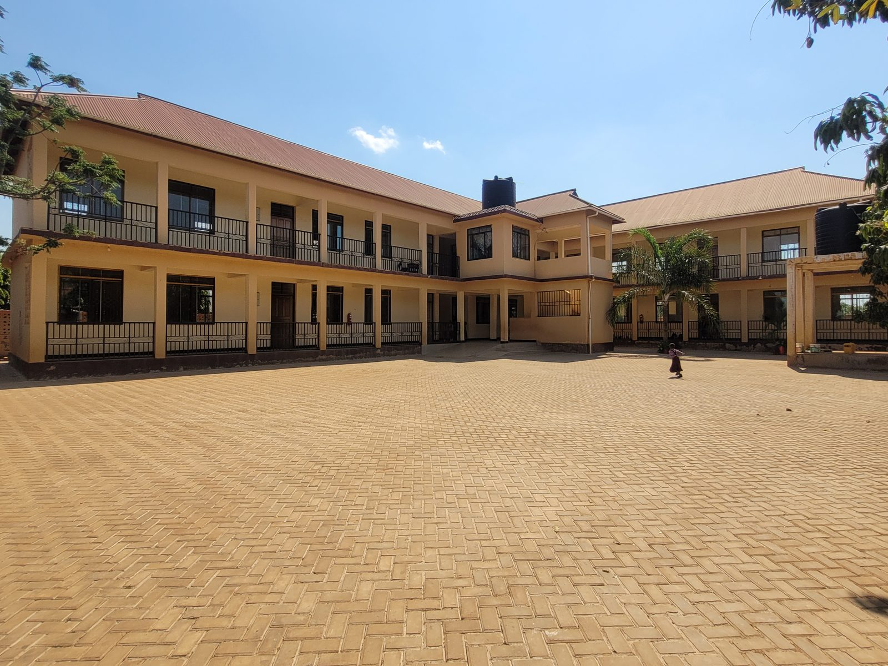
A school for every family
All faiths together
Children from families of every religion learn side by side at Bensal, and learn to respect one another.
A day school
Pupils spend the day with us and go home to their families each evening.
Ready for exams
Upper primary pupils practise with regional and external mock exams, so national exams hold no surprises.
Around the school
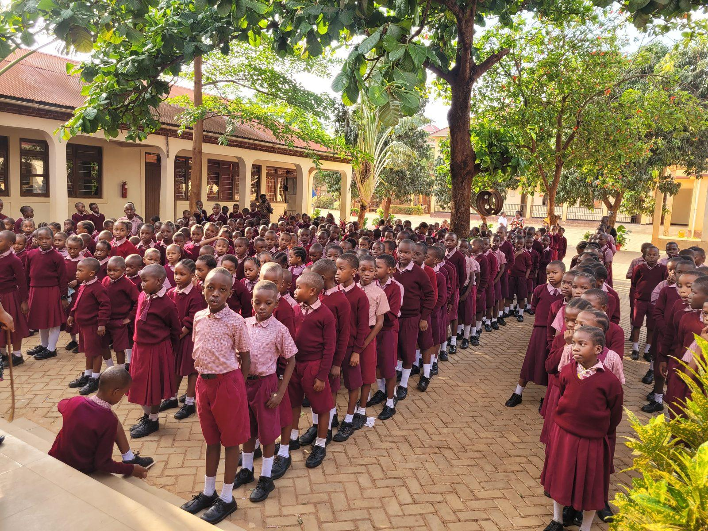
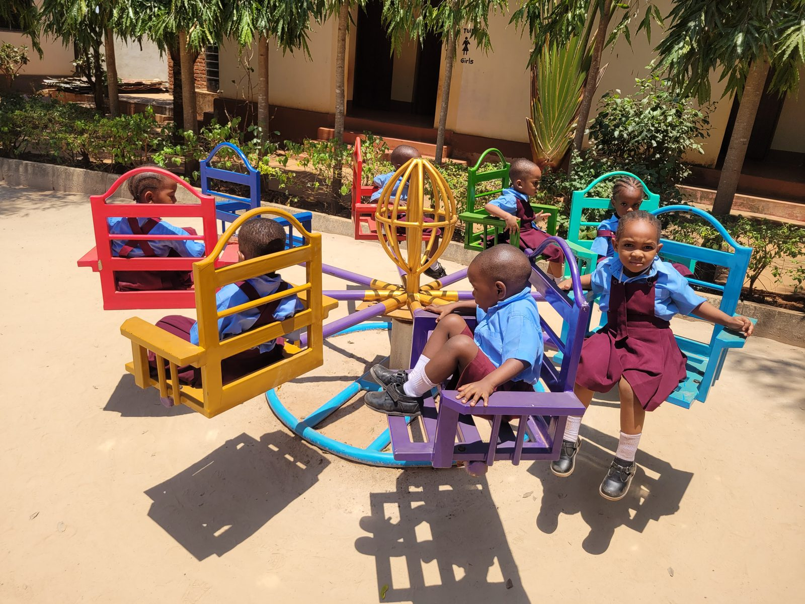
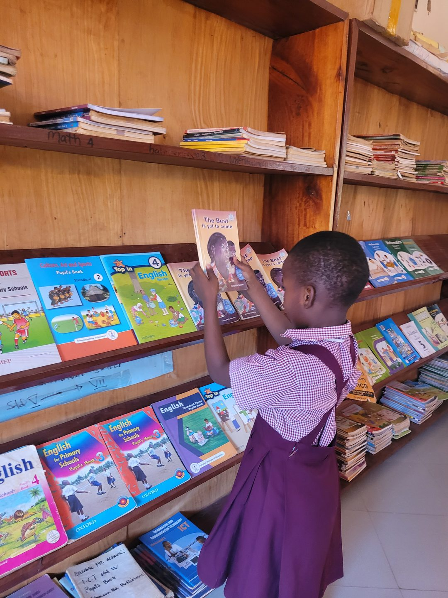
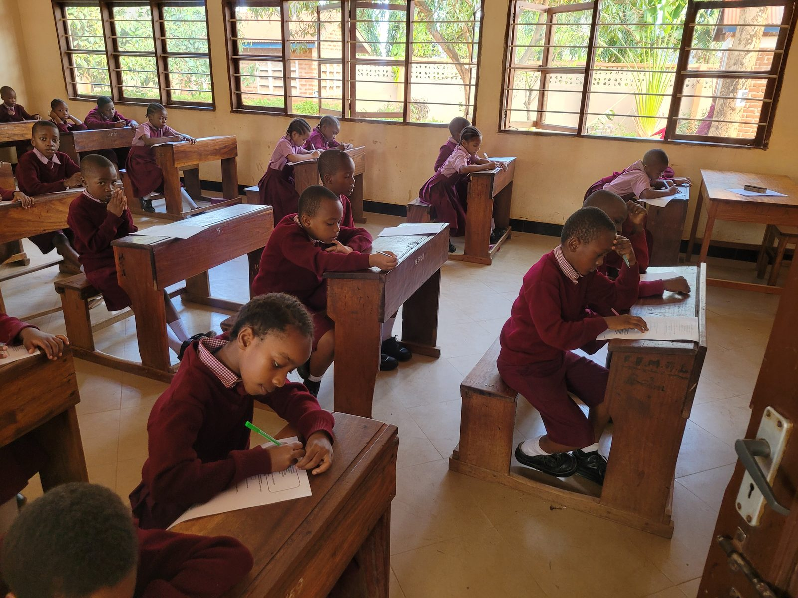
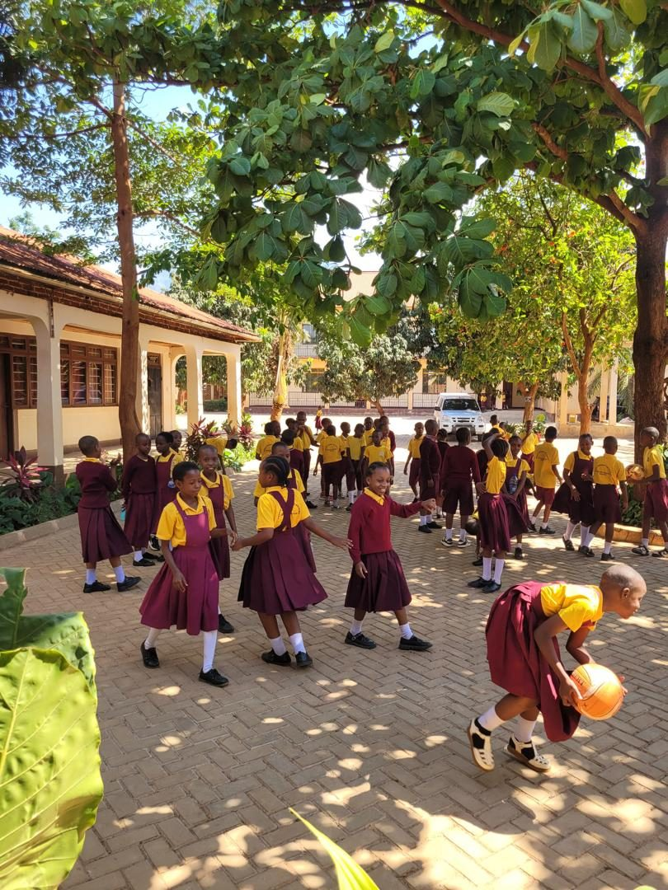
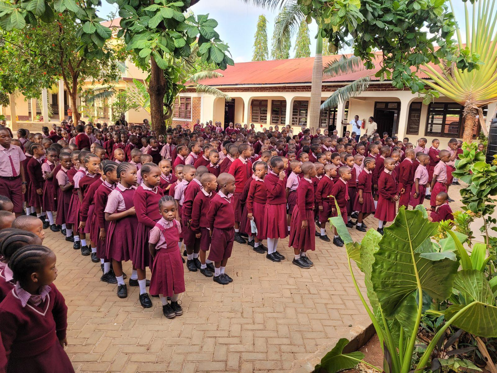
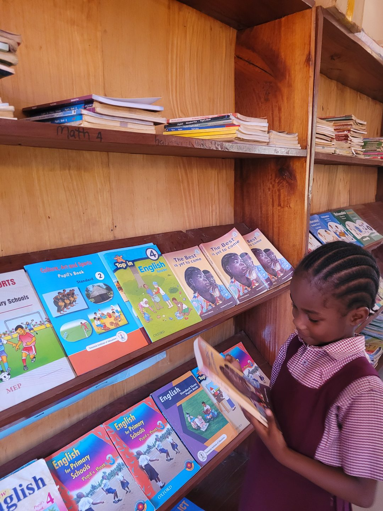
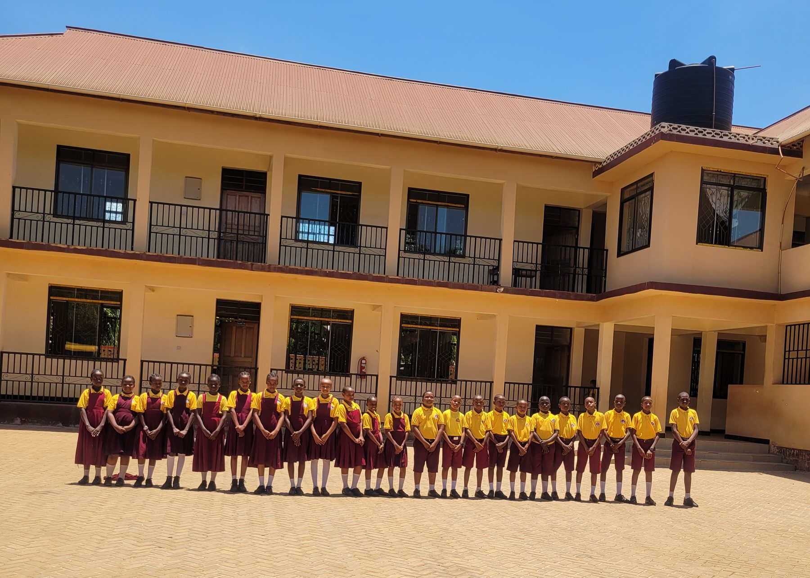
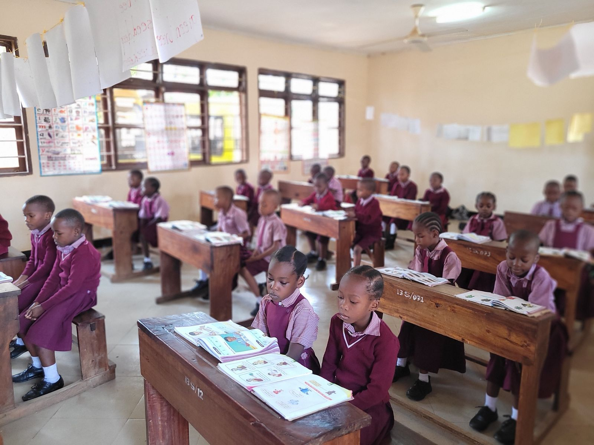
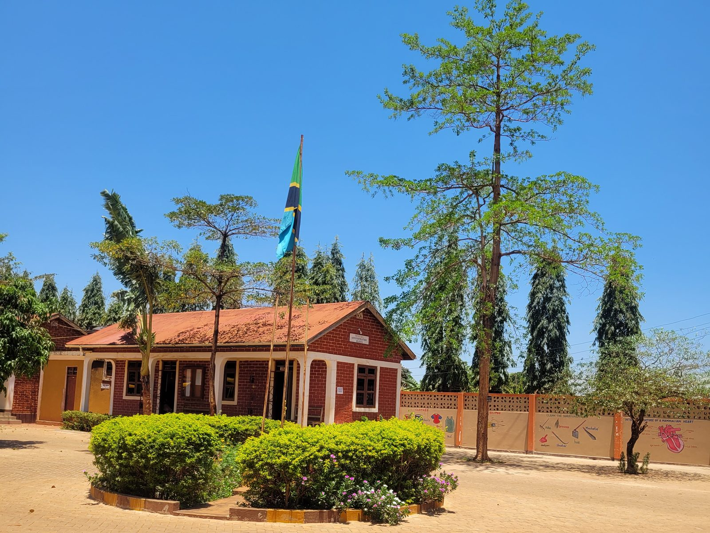
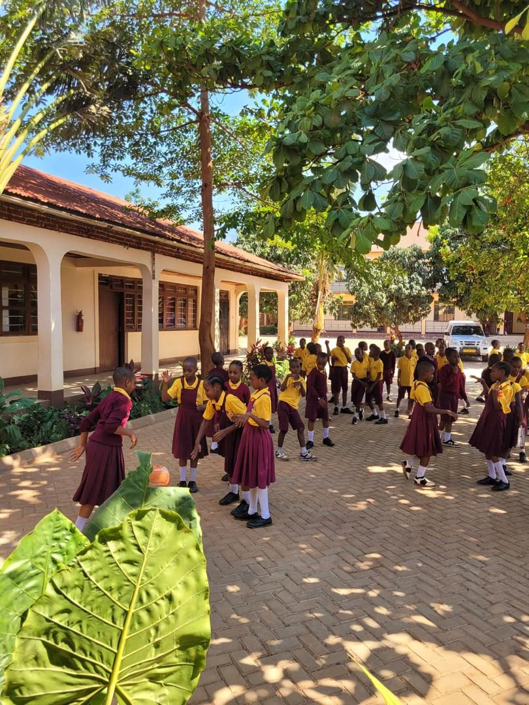
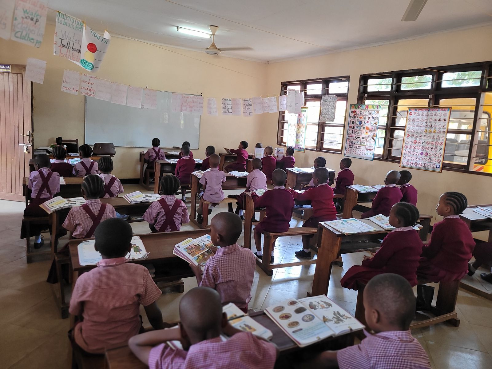
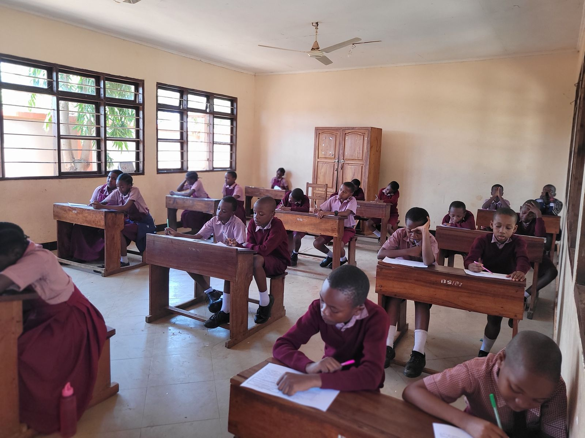
See it in person
Visits are welcome during office hours, Monday to Friday.